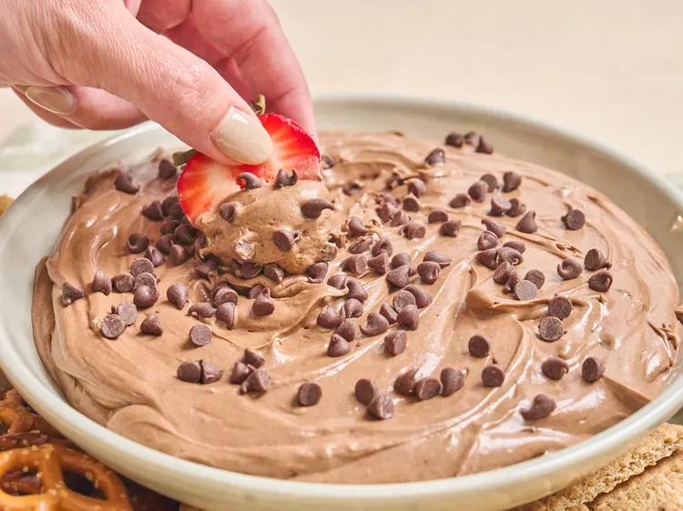

Brownie Dip

Description
A rich, chocolatey no-bake dessert dip that tastes just like brownie batter, made safe to eat by heat-treating the mix first. Perfect for parties, served with fruit, pretzels, or cookies for dipping.
Ingredients
- 1 box brownie mix (15-18 oz)
- 8 oz cream cheese, softened
- 8 oz whipped topping, thawed
- 1/2 cup mini chocolate chips
- 2-3 tbsp milk, as needed to thin
Steps
- Heat the brownie mix in a microwave-safe bowl in 15-second intervals, stirring each time, until it reaches about 165°F. Let it cool completely.
- Beat the softened cream cheese in a large bowl until smooth.
- Gradually mix in the cooled brownie mix until well combined.
- Fold in the whipped topping until the mixture is even and fluffy.
- Stir in the mini chocolate chips, adding milk a tablespoon at a time if you'd like a thinner consistency.
- Transfer to a serving bowl and serve with fruit, pretzels, or graham crackers.
Back to Odin Recipes